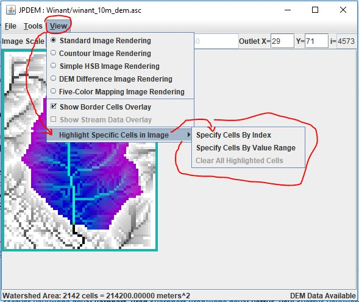
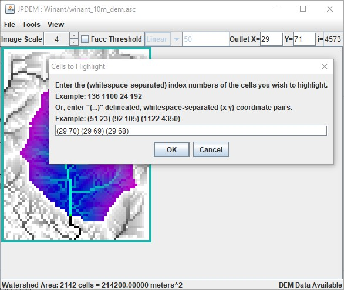
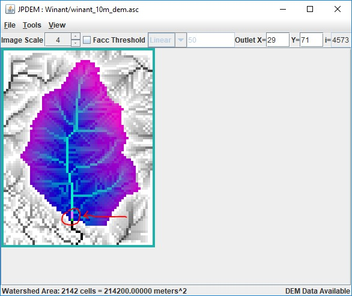
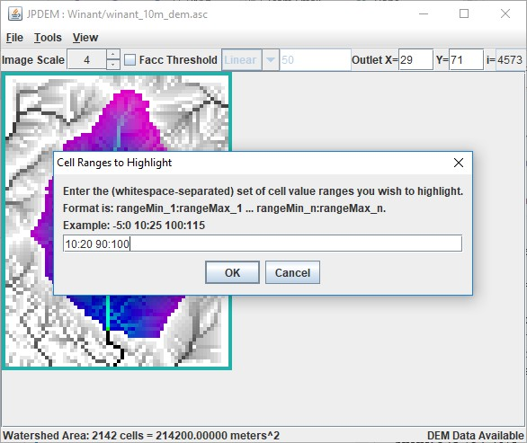
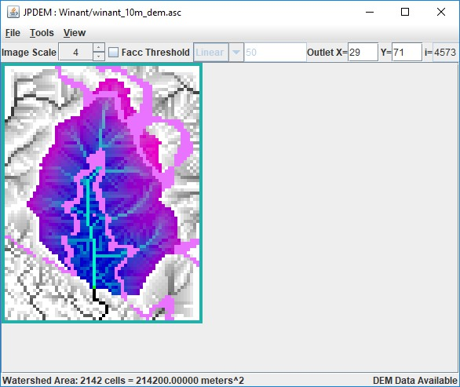

JPDEM Cell Highlighter
Overview (Tutorial B.2 - JPDEM Cell Highlighter)
This tutorial explains how to use JPDEM's Cell Highlighter functions to select one or more specific cells within the currently-loaded map (DEM or other spatial data) and display them in a distinct color. The highlighter makes those cell's locations easier to spot and keep track of.
Follow these steps to use JPDEM's Cell Highlighter functions to highlight the locations of selected cells:
Load a flat-processed DEM into JPDEM (see Section 1.1).
The Cell Highlighter controls are items in the View Menu:

The "Clear All Highlighted Cells" item does exactly what it says, clearing the highlighting from any cells specifiedfor highlighting. It's only enabled when one or more cells are highlighted.
The two "Specify Cells …" options allow you to specify which cells to highlight.
"By Index" means either by listing the linear indices of the cells, or by their (x y) coordinate pairs.
"By Value" means by specifying a range of cell values. All cells within the map whose values are within the specified range are highlighted.
Highlighting Cells by Index
Click the View -> Highlight Specific Cells in Image -> Specify Cells By Index menu item.
The "Cells to Highlight" dialog box opens; note the instructions.
Here is an example that specifies the 3 cells above the outlet location, using the (x y) coordinate pairs notation option. Important! Notices that there is NO COMMA between the x and y values.

After entering the (x y) coordinate pairs and clicking OK, JPDEM highlights the specified cell locations over thecurrent display/view option:

Highlighting Cells by Value
Click the View -> Highlight Specific Cells in Image -> Specify Cells By Value Range menu item.
The "Cell Ranges to Highlight" dialog box opens; note the instructions.
Here is an example that specifies all cells with values between 10 and 20, and between 90 and 100:

Notice that the notation differs from the Cell By index dialog, but that whitespace, NOT COMMAS, is still thedelimiter in use.
After entering the low:high coordinate pairs and clicking OK, JPDEM highlights the specified cell locations over thecurrent display/view option:

Notes and Limitations
Cell Highlighting (when specified) is visible for all the rendering modes selectable in the View menu. However,depending upon the selected View mode, the highlight color may be "pepto-pink", cyan, or white:
| View Rendering Mode | Highlighter Color |
|---|---|
| Standard Image Rendering | Pepto-Pink |
| Contour Image Rendering | Pepto-Pink |
| Simple HSB Image Rendering | White |
| DEM Difference Image Rendering | Cyan |
| Five-Color Mapping Image Rendering | Pepto-Pink |
The Cell Highlighter does not permit specifying both cell index and cell values at the same time. You must choose oneor the other, and changing from one to the other clears the previous cell-highlighting.